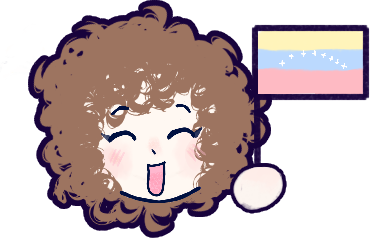

Favorite Memories
Favorite Memories  Hello! I'm Skye! I wanted to talk about something very important to me. My kitty. Mimi. My sweet baby. I feel she deserves something special in this place, because truth be told, she was and still is my safe place. Even when she's no longer here in this world. Her memory is still here with me, and I want her to be here. I want her existence to be remembered.
Hello! I'm Skye! I wanted to talk about something very important to me. My kitty. Mimi. My sweet baby. I feel she deserves something special in this place, because truth be told, she was and still is my safe place. Even when she's no longer here in this world. Her memory is still here with me, and I want her to be here. I want her existence to be remembered. 

My little cat, Mimi, was six years old when she died; she should be 10 today if she were still alive. Her passing was a huge blow to me and sent me into a painful spiral of depression, from which I thought I'd never recover, and from which I still have not fully recovered.
I want to talk a bit more about her, about the moments we shared, the things we did together, and the memories I’ve held onto since the day she came into my arms. The truth is, I can’t help but be obsessed with talking about my kitty. It makes me happy. If someone, anyone, remembers her or knows something about her, that alone is enough for me. I want her presence in this world to last for as long as possible.
That’s why I’m sharing this here, on my website. Someday, this site will be gone, but I don’t think that day is coming anytime soon. I like to believe that the things I post here are, in a way, immortal, that they’ll never truly be erased. I want the same to be true for my kitty, or at least for the memory of her. I want it to last as long as it possibly can. So maybe, when I feel sad, I can read this and remember her, and maybe, just maybe, it will make me feel a little better. And I think this, hopefully, will make this place a little more special, too.
Her name, Mimi, was a little unusual but also sweet. When I was very young, I had trouble speaking. I didn’t know a single word at first. My family nicknamed me “Chichi” because I would repeat sounds over and over when trying to talk, and I struggled a lot with speech. I was always embarrassed by that nickname. But the first time I held my kitten in my arms, I remember though I was still just a little girl, calling her “Mimi” for some reason I can’t explain. From that moment on, the name stuck. I’ve called her that my entire life, and I’m certain I will until the day I die.
Mimi was an incredibly sweet, sensitive, and one-of-a-kind cat to me. She wasn’t my first pet, but she was my first true, deep love. I needed her just as much as she needed me, and it hurt both of us whenever we were apart. After she passed away from kidney failure, I didn’t know how to cope. I pulled away from everything, thinking that if I shut myself off, nothing could hurt me again. I started avoiding anything that reminded me of her and built a home in my head, a home far away from her without even realizing it. And I still blame myself for that.
Sometimes I wonder if I’m just exaggerating when I say how much losing her hurt. But the truth is, that pain only proves how much she meant to me, and still means, even years later. From the moment she was by my side, I always dreaded the day I’d have to say goodbye.
I remember the day I found her. I had just gotten home from elementary school. I don’t even know how it was possible for me to hear her tiny kitten cries from so far away, but I ran toward the sound, thinking it must be a cat in need of help. My mom told me it was nothing. I refused to believe her. I knew there was something out there. And then I saw her.. a tiny, abandoned kitten in the middle of a sunlit field, crying for food and terrified.
I immediately asked for help to get her out of there and scooped her up in my arms. She was so small she could fit in my hands. She didn’t even know how to eat properly yetm the vets said she wasn’t even a month old. No one knew how she’d ended up there alone, but they all agreed it was a miracle I had found her at all, otherwise, she wouldn’t have survived.
I tried to convince my dad to let me keep her, but we weren’t allowed to have pets. He made me leave her far from home, and I did, crying the whole time. I felt awful. I thought it would be the last time I’d ever see her. I threw myself on my bed and cried until, once again, I heard those little cries outside. I opened the door, and there she was, so tiny, yet somehow she had made her way all the way back to my doorstep, like asking me to let her in.
Why does this story still surprise me? It’s simple: I didn’t live just anywhere. I lived in a private apartment building. I still don’t know how such a tiny kitten could walk that far, climb so many stairs, about six floors, and somehow know exactly which door was mine. I didn’t want to let her go again. She pressed herself against my chest, trembling, and fell asleep in my arms. She felt safe with me, and I felt safe with her. So I brought her inside.
The discussion with my parents wasn’t easy, but in the end, the truth was undeniable: they couldn’t fight the fact that Mimi and I were inseparable, and that both of us wanted to be together. And that’s how Mimi came into my life to stay.
Favorite Memories I still remember my days in Venezuela when I was young, just a little girl. During the town celebrations, when the fairs and carnivals arrived, everything at my elementary school would fill with music and colors. I remember traveling to Cucuta, Colombia, to stay with my abuelita. She would knead dough for Andean arepas made from wheat flour, and she always let me shape my own. They came out crooked every time, but she would smile and say they were “the prettiest ones.” On the table, there was never a shortage of freshly made hot chocolate, smoked cheese, crystal-clear candied papaya, creamy rice pudding my aunt would serve in glasses, and of course, chicha.
Just thinking about those arepas makes my mouth water. Traditional in the Andean region of northwestern Venezuela, where wheat grows in abundance, these golden arepas are thin and made from flour. I admit I love every kind of arepa, even though I’m not good at making them, but the Andean ones are my favorite, especially with a bowl of pisca andina, the beloved Venezuelan breakfast soup made with milk and potatoes.  That comforting, creamy soup is one of my absolute favorites.
That comforting, creamy soup is one of my absolute favorites.
In December, the smell of boiling plantain leaves would mix with the rest of the holiday foods. We would all gather to make hallacas, and I would always try to sneak an extra one into my hand to eat in secret.

Afternoons were slow and golden like a beautiful painting. I would spend them playing with my best friend at home with my toys, and when we went up into the mountains to visit fincas, the breeze would carry the sweet scent of peach blossoms. Sometimes, a vendor would pass by with his cart of homemade blackberry ice cream, and I would run to beg my dad to buy me some, afraid the man would leave before we got there. Even though the streets of those towns have changed, in my memory they are still the same, you know? narrow, cobblestone, and full of life, as if they had never stopped waiting for me.